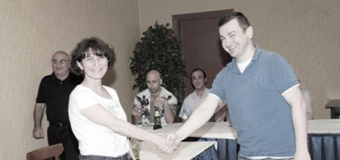

ЛУИЗА ПОГОСЯН ПРОТИВ ВЫХОДА ГРУЗИИ ИЗ СНГ
Протокол Гражданского слушания
с участием представителей Азербайджана, Армении и Грузии
Тбилиси
27.06.2009
Истец: Луиза Погосян
Ответчик: Ираклий Берулава
Председатель комиссии: Ниязи Мехти
Члены комиссии: Владимир Папава, Георгий Ванян, Шахбаз Худуоглу, Алекпер Алиев, Грант Аванесян, Беслан Кмузов, Ираклий Чихладзе
Программу осуществляют:
Альянс женщин за гражданское общество- Азербайджан, Международная ассоциация женщин -инвалидов Грузии, Кавказский Центр Миротворческих Инициатив - Армения
при поддержке Национального фонда демократии (NED)
с участием представителей Азербайджана, Армении и Грузии
Тбилиси
27.06.2009
Истец: Луиза Погосян
Ответчик: Ираклий Берулава
Председатель комиссии: Ниязи Мехти
Члены комиссии: Владимир Папава, Георгий Ванян, Шахбаз Худуоглу, Алекпер Алиев, Грант Аванесян, Беслан Кмузов, Ираклий Чихладзе
Программу осуществляют:
Альянс женщин за гражданское общество- Азербайджан, Международная ассоциация женщин -инвалидов Грузии, Кавказский Центр Миротворческих Инициатив - Армения
при поддержке Национального фонда демократии (NED)
Выступление истца: Уважаемая публика, уважаемая комиссия и уважаемый ответчик, прежде чем изложу суть моего иска, хочу напомнить, что правила гражданских слушаний разрешают отходить от определенных этических норм. Поскольку наша тема - выход Грузии из СНГ- находится в поле деятельности президента, парламента, правительства Грузии, форма изложения проблемы - критика властей Грузии и рекомендации, им же адресованные - выбрана мною исключительно для формата этого слушания.
Начнем с цитаты, которую считаю самым подходящим эпиграфом для своего иска. Итак, газета "Tруд-7" № 225 от 1 декабря 2005, интервью Александра Дугина.
"Труд": Так, может, скатертью дорожка? Ведь некоторые грузинские политики, высокопоставленные чиновники ведут себя по отношению к России, мягко говоря, бестактно, а мы их фактически поддерживаем, поставляя в страну относительно дешевые энергоносители, электроэнергию. Выйдет республика из СНГ - сама себя и накажет и "режим Саакашвили" тоже...
Александр Дугин: Не согласен. СНГ для нас - последняя связь с той социально-политической, геополитической моделью, которая существовала веками - в Российской империи, в Советском Союзе. Задача наказать Саакашвили - не стоит. Это резко противопоставит нас Западу, напугает других партнеров по Содружеству, ударит по грузинскому народу. Задача в другом: сохранить постсоветское пространство, укрепить единство. Политики, президенты приходят и уходят, а интересы народов остаются. Пока есть такая юридическая инстанция - СНГ, всегда можно вернуться к обсуждению положения дел в ней с другим президентом. А вот если осуществляется решительный юридический разрыв, то вернуться гораздо сложнее.
Поэтому те из российских и грузинских политиков, которые всерьез встревожены ситуацией, ясно осознают, что мы понесем основательные потери. Попробуйте представить развитие событий в случае выхода Грузии из состава СНГ. Последуют ответные шаги Москвы. Может быть сделана окончательная ставка на поддержку Абхазии и Южной Осетии. А там недалеко и до прямого конфликта с Грузией. Ситуацию легко обрушить, но трудно восстановить. Мне представляется, что пока Грузия остается в составе СНГ, необходимо сделать все, чтобы вразумить недальновидных деятелей, обратить вспять разрушительные процессы на пространстве Евразии. (конец цитаты)
Как вам это? «Пророк» Дугин чуть-чуть ошибся. Грузия не вышла из СНГ, но «ответные шаги Москвы» все-таки были предприняты.
Так в чем же сегодня смысл выхода Грузии из СНГ?
СНГ часто характеризуют как балласт, «мертвую» структуру. На самом деле СНГ более опасно – это постоянное поле псевдо-сотрудничества, воплощение имперского маразма, идеологическая копия СССР. О задаче сохранения постсоветского пространства (читай - территории контроля России) и укреплении единства (читай – зависимости от России) уже говорит не только Дугин, об этом говорит президент РФ.
Что в таких условиях может и должна предпринять Грузия?
Сделать все возможное для роспуска СНГ.
Конечно же, фактическое политическое, экономическое и военное влияние России на постсоветском пространстве не обусловлено существованием СНГ, но вместе с тем роспуск СНГ может стать значимым толчком, символом для оздоровления отношений между бывшими советскими республиками. Впрочем, в наших обстоятельствах «оздоровление» надо ставить в кавычки, поскольку подразумевается лишь некоторое «прояснение ситуации».
Процесс роспуска СНГ, требующий большого вложения человеческой энергии, выработки и осуществления комплексной политической программы только на первый взгляд может показаться «сизифовым трудом» - на самом деле и сам процесс и тем более его успешное завершение может стать очень важным фундаментом для создания новой реальности, которая наконец освободит нас, таких разных, от ярлыка «советскости» и от более обидной приставки «пост».
В сложившихся обстоятельствах, из всех государств-членов СНГ, на мой взгляд, только Грузия, исходя из своих политических интересов, способна стать локомотивом в этом процессе. Поэтому я выступаю против выхода Грузии из СНГ.
Руководство Грузии, на мой взгляд, предприняло ошибочные, инерционные шаги по выходу из СНГ, которые, по сути, направлены не на ослабление, а наоборот, на поддерживают значимость этой структуры. Грузия просто реанимировала «Выход из СНГ-2006», и данный процесс при существенно изменившейся ситуации уже не тянет даже на «политический демарш», и будет иметь не только нулевой, но и минусовой эффект, поскольку облегчит России дальнейшее политическое манипулирование на постсоветском пространстве.
Формат данного иска не позволяет мне подробно осветить историю создания и деятельности СНГ, или же сделать экскурс в новейшую историю постсоветского пространства, где в течение более чем 20 лет Российская Федерация несет на себе «бремя миротворчества», результаты которого сегодня налицо.
Попробуем разобраться, как шел и продолжает идти процесс выхода Грузии из этой организации, а затем я представлю вашему вниманию возможную альтернативу.
Процесс выхода Грузии из СНГ
12 августа 2008 года на митинге перед зданием парламента президент Грузии Михаил Саакашвили объявил о том, что Грузия выходит из Содружества Независимых Государств. «Мы окончательно прощаемся с Советским Союзом, СССР сюда больше никогда не вернется. Мы призываем Украину и другие страны-члены СНГ покинуть то объединение, которым управляет Россия без спроса других стран", - это цитата из выступления Саакашвили. (из сообщения ИТАР-ТАСС).
14 августа 2008 года грузинским парламентом было принято единогласное (117 голосами) решение о выходе Грузии из СНГ. Парламент отменил участие Грузии в следующих соглашениях. "Соглашение о создании Содружества независимых государств от 8 декабря 1991 года", "Устав СНГ, утвержденный Советом глав государств СНГ 22 января 1993 года" и "Договор об экономическом союзе от 24 сентября 1993 года".
18 августа 2008 года Министерство иностранных дел Грузии известило Нотой Исполком СНГ о выходе страны из Содружества. На следующий день Грузия заявила о своем намерении остаться участницей ряда подписанных ею в рамках СНГ договоров.
26 августа 2008 года на заседании Совета постоянных представителей СНГ в Минске было принято решение ввести вопрос о членстве Грузии в СНГ в повестку дня Совета министров иностранных дел (СМИД) и Совета глав государств (СГГ) СНГ, на очередных заседаниях, которые состоятся в октябре 2008 г.
29 августа 2008 года Премьер-министр Грузии Владимир Гургенидзе подписал распоряжение о выходе страны из всех соглашений в рамках СНГ и с РФ по миротворческим операциям.
9 октября 2008 года в Бишкеке на своем очередном заседании Совет министров иностранных дел рассмотрел вопрос «О членстве Грузии в Содружестве Независимых Государств» и принял формальное решение о прекращении членства Грузии в Содружестве с 18 августа 2009 года. Главы внешнеполитических ведомств поручили Исполкому во взаимодействии со странами СНГ провести инвентаризацию международных договоров и решений соответствующих органов Содружества, согласие на обязательность которых было выражено Грузией, на предмет ее участия в них.
12-13 марта в Исполнительном комитете Содружества в Минске прошло заседание экспертной группы по рассмотрению вопроса об участии Грузии в международных договорах и решениях органов СНГ. На заседании эксперты рассмотрели, доработали и согласовали с учетом поступивших от государств замечаний и предложений перечни международных договоров и решений органов Содружества, участницей которых является Грузия. Представители стран СНГ пришли к выводу, что прекращение членства Грузии в Содружестве с 18 августа 2009 года означает и прекращение действия для нее всех решений органов Содружества. Вместе с тем, эксперты не пришли к единому пониманию участия Грузии в договорах с ограниченным субъектным составом (их участниками могут быть только страны СНГ) и посчитали целесообразным обратиться к государствам с просьбой представить свои предложения по данному вопросу. Эксперты также констатировали отсутствие правовых препятствий по участию Грузии в договорах, участниками которых могут быть и государства, не входящие в состав Содружества, после 18 августа 2009 года.
Итоги следующего заседания экспертной группы, проходящей 3-4 июня 2009 г., были фактически нулевыми. Вопрос участия Грузии в договорах с ограниченным субъектным составом остался не решенным и был передан на рассмотрение Экономического Совета СНГ, которое состоялось 19 июня. По некоторым публикациям прессы на этом заседании участвовали также представители Грузии, которые проявили в частности интерес к участию в «Соглашении о правилах определения страны происхождения товаров в СНГ». О том, к какому именно выводу пришли на заседании – не говорится ничего ни в официальном пресс-релизе, ни в прессе СНГ. Вопрос этот будет вынесен на обсуждение СГГ и СМИД… только в октябре, уже после того, как Грузия перестанет быть членом СНГ.
Думаю, при нынешнем развитии событий у Грузии очень мало шансов присоединения к этому, или же каким-либо другим соглашениям в рамках СНГ. Насколько это может отразиться на экономических отношениях стран Южного Кавказа и насколько удачным будет переход к сотрудничеству на двусторонней основе – это тема отдельного разговора.
В контексте же своего иска хочу обратить ваше внимание на следующий факт. По состоянию на 26 августа 2008 года планировалось, что вопрос о членстве Грузии в СНГ будет заслушан в двух инстанциях: Совете Глав Государств и Совете министров ИД. Между тем в октябре этот вопрос не оказался в повестке высшего органа СНГ – СГГ, и был обсужден только в СМИД.
Не лишне здесь будет напомнить уставную функцию высшего органа СНГ: СГГ обсуждает и решает принципиальные вопросы, связанные с деятельностью государств-членов в сфере их общих интересов.
Получилось, что членство Грузии не стало, и по логике развития событий, уже никогда не станет принципиальным вопросом, в сфере общих интересов государств-членов СНГ.
Почему слова президента Грузии «Мы призываем Украину и другие страны-члены СНГ покинуть то объединение, которым управляет Россия без спроса других стран" не воплотились в обсуждение на высшем уровне? Почему не было созвано внеочередное заседание СГГ? Эти претензии можно направить к руководству каждой из стран СНГ, потому что каждая из них имеет право на созыв внеочередного заседания по особо важным вопросам. Но тема наша разговора - это действия, или точнее бездействие Грузии, в результате которого ее выход из СНГ вышел из политической сферы, оказался в сфере технической утряски бумажных вопросов. Если не будет проведено значимых шагов с грузинской стороны, этот процесс будет продолжен вплоть до «милостливого» представления Грузии статуса наблюдателя в СНГ. А это, согласитесь – есть поражение.
Что могла и еще может сделать Грузия
Во избежание недоразумения хочу отметить, что мне, автору иска, абсолютно не импонирует позиция Зураба Хонелидзе и его аргументация в пользу «не выхода» Грузии из СНГ. Грузия должна инициировать процесс роспуска СНГ, а не «раболепно» использовать официальные и тем более кулуарные возможности этой организации. Не выдерживает также критики его предложение о том, чтобы страны СНГ заново признали территориальную целостность Грузии. Вопросы можно ставить более четко. Россия нарушила Устав, она должна выйти из СНГ.
Статьи 9 устава СНГ гласит: Государство-член вправе выйти из Содружества. О таком намерении государство-член извещает письменно депозитария настоящего Устава за 12 месяцев до выхода. Обязательства, возникшие в период участия в настоящем Уставе, связывают соответствующие государства до их полного выполнения.
Отсюда можно предположить, что до 18 августа 2009 года Грузия имеет право инициировать действия, пользуясь своим статусом государства-члена СНГ. А именно:
1. В соответствии с последним абзацем статьи 21 Устава:
- Созвать внеочередное заседание Совета глав государств, на котором, в соответствии с той же статьей Устава должны обсуждаться и решаться принципиальные вопросы, связанные с деятельностью государств-членов в сфере их общих интересов.
2. В соответствии со статьей 10 Устава:
- Поставить на обсуждение Совета глав государств вопрос нарушения Российской Федерацией устава СНГ, систематического невыполнения обязательств по соглашениям, заключенным в рамках Содружества и потребовать принятия мер, допускаемых международным правом.
Грузия могла бы также инициировать обсуждения по линии межпарламентской ассамблеи СНГ. Но увы, 12 июня этого года, в День России, парламент Грузии принял постановление о прекращении действия соглашения от 27 марта 1992 года о Межпарламентской Ассамблее СНГ в отношении Грузии, а также о прекращении действия конвенции о Межпарламентской Ассамблее СНГ в отношении Грузии от 26 мая 1995 года. Выбор даты этого постановления, думаю не случайный. Это одна из деталей процесса выхода из СНГ, который, к сожалению, никак не может прорвать узкие рамки политического де-марша.
Напомню, что 14 августа 2008 года, кроме решения о выходе из СНГ, парламент Грузии принял обращение к международному сообществу с просьбой «приложить усилия к выдворению российских войск с территории Грузии, частью которой грузинская сторона считает непризнанные республики Абхазия и Южная Осетия». Что же помешало Грузии озвучить эту просьбу, например, на заседании Межпарламентской Ассамблеи СНГ?
Суть предлагаемых мною шагов состоит в отказе от демарша и в переходе к процессу «очной ставки» не только с Россией, но и со всеми странами СНГ.
Вне зависимости от того, насколько удачно и продуктивно пойдет указанный выше процесс, Грузия может восстановить свое полноправное членство в СНГ двумя путями:
1. отозвать Ноту о выходе из СНГ
2. после 18 августа 2009 года подать новое заявление о членстве.
И далее вести последовательную политику по роспуску СНГ, укрепляя двусторонние связи со странами СНГ во всех областях, используя все возможности СНГ для продвижения собственных политических интересов. Сознаю, что предложенную мною альтернативу можно разгромить в пух и прах. Сознаю, что предложенный мною сценарий попахивает «утопическим романтизмом», но, тем не менее, могу с уверенностью сказать, что нынешнее упорное замалчивание проблем, возникших в зоне СНГ после августовских событий, упорное замалчивание на всех уровнях, начиная с высшего руководства и кончая рядовыми журналистами-аналитиками – выйдет всем нам боком, грозит большой катастрофой для всех постсоветских стран. Обобщаю на основе более близкого мне сегодняшнего состояния грузино-армянских отношений.
Закончив на этой тревожной ноте, с нетерпением и надеждой жду, чтобы Ответчик убедил меня, членов комиссии и уважаемую публику в целесообразности выхода Грузии из СНГ, с учетом сложившейся на данный момент ситуации.
Конец доклада.
ПРЕНИЯ ПО ВЫСТУПЛЕНИЮ ИСТЦА
Беслан Кмузов (член комиссии): Вы отметили в иске, что Грузия возможно останется в «Соглашении о правилах определения страны происхождения товаров в СНГ», возможно будут вестись переговоры и по другим вопросам экономического сотрудничества, как Вы думаете, кто останется в выигрыше и кто проиграет в результате неучастия Грузии в договорах СНГ, Россия или Грузия?
Истец: Я думаю, по результативности выход Грузии из СНГ, если он будет идти по существующей логике развития событий, является нулевым – никто не выиграл и никто не проиграл.
Грант Аванесян (член комиссии): Ваша аргументация целиком основана на правовых аспектах проблемы, в то время как Ответчик, насколько знаю, будет строить свое выступление на идеологических и эмоциональных доводах. Почему вы решили остаться в строгом правовое поле и ничем иным не подкрепили свой иск?
Истец: Мой выбор обоснован самой темой слушания. Процесс выхода Грузии из СНГ основан на идеологии и эмоциях, я выступаю именно против этих качеств процесса, предлагая альтернативу с использованием правовых механизмов.
Вопрос из аудитории: Если допустить, что Грузия воспользовавшись вашими рекомендациями вынесет вопрос о членстве России на голосование в СНГ, вы можете представить, что какая-либо из стран СНГ, в частности Армения, будет голосовать против России?
Истец: Скорее всего, Армения не поддержит Грузию. Скорее всего Грузия вообще не получит поддержки в СНГ. Но предложенная мною альтернатива очной ставки – была бы маленьким ростком, дала бы шанс изменить характер всех процессов на постсоветском пространстве. Сделать их открытыми. Иначе, тот же процесс противостояния пойдет втихаря, тайно, методами шантажа, и еще больше углубит существующие проблемы.
Председатель закрывает прения по выступлению истца и дает слово Ответчику.
ИРАКЛИЙ БЕРУЛАВА О ВЫХОДЕ ГРУЗИИ ИЗ СНГ
Добрый день. При обсуждении целесообразности выхода Грузии из СНГ я постараюсь не прибегать к длительным экскурсам в историю и цитированию различных изданий, людей и прочее.
Суть моего убеждения в правильности этого шага со стороны Грузии. СНГ - аморфна по своей сути, в ней собраны государства, большинство из которых идеологически остались в прошлом, не разделяют демократических ценностей и не интересны Грузии, по крайней мере, ее нынешней политической элите, как партнеры по Союзу, который к тому же, Союзом, в прямом смысле слова, не является! Есть империя и есть вассальные государства, для многих из которых развал СССР реально явился геополитической катастрофой. Точка. Каждый сам должен делать свой выбор. Не думаю, что в такой ситуации даже Данко или Прометей, а Грузия не является ни тем, ни другим, смогли бы увлечь за собой оставшихся членов СНГ, потому что все дело в том, что большинство государств соответствуют этому союзу по своему политическому менталитету. И маленькая Грузия ничего здесь изменить не может.
Вообще, Луиза, не может быть и речи о том, что кто-то куда-то кого-то поведет за собой. Если ты демократическое, реформаторское государство, а такая претензия есть у команды Саакашвили, то просто не имеешь права находиться в одном союзе со странами, которые на совершенно другом уровне развития гражданского общества и по политическому менталитету и ценностям от тебя сильно отличаются ...
Именно поэтому - ваш вопрос, в чем смысл выхода Грузии из СНГ, мне не совсем понятен? Здесь вообще не должно быть предмета для торга. Более того, исходя из своего реально интереснейшего, ключевого в регионе геополитического расположения Грузия всегда будет манить Россию, и Москва прекрасно знает, что Тбилиси – это тот самый ключ, получив который, ты сможешь контролировать транзиты, Южный Кавказ, море, вновь выйти к Турции и получить серьезного союзника, как это было в 19 и 20 веках. Поэтому ставки в этой игре всегда будут высоки, и Грузия, взявшая на себя такую ответственность - противостоять России, либо будет гнуть свою линию, либо вернется туда, откуда она вырвалась. Другого пути нет, разумеется, я не из тех, кто верит в чушь о каком-то своем пути развития, сейчас 21 век и смешно не стремиться туда, где интереснее и лучше, кому-то интереснее на Западе, кому-то в СНГ, а кому-то закрыться в Тегеране, Пхеньяне или Ашхабаде.
«Грузия должна повести за собой. Грузия может стать локомотивом в этом процессе». Луиза, это нереально, потому что Грузия - сама по себе, довольно слабое, маленькое государство, способное противостоять империи только благодаря помощи США и Запада. Вряд ли при нынешней ситуации в Армении и Азербайджане, они пойдут по грузинскому пути, это очень разные культуры, политические традиции, и мироощущение и, в конце концов, политический выбор. И потом, это же нонсенс, та же Армения пойдет за Грузией против России, это просто невозможно. Пожизненные президенты, портреты вождей, дичайший феодализм, который происходит в Чечне и не только. Президент, который выступает за многоженство и обещает взять кровь у противников... Повсюду в СНГ, при молчаливом согласии России приходят старомодные, неинтересные команды к власти.
Президенты без лиц. Какой резон Грузии, которая в 2003 году объявила о том, что она на рубеже войны цивилизаций, вообще находиться в составе союза, возглавляемого нынешней Россией. Здесь вообще торг неуместен, здесь дело в том, who is who!
Мне многие могут возразить, да что ты, а российский рынок, а огромные экономические возможности?
Никто не отказывается от российского рынка, он огромен и, разумеется, манит, но что взамен?! Если ты не государство-лицемер, то у тебя должны быть какие-то основополагающие принципы...они, Луиза, или есть, или их нет.
Теперь о Грузии - локомотиве. В Грузии сейчас все висит на волоске и, к сожалению, на сегодняшний день люди со старым мышлением в большинстве и они хотят реванш, и реванш не исключен. Если учесть, что Саакашвили утратил на данный момент 20% территории, причем их признала Россия, фактически, присоединив к себе, то надо быть идиотом, чтобы не понимать, на каком крючке находится сейчас Грузия. Многие оппозиционеры, придя к власти, начнут торговлю с Россией за уступки, разумеется, та, возможно, вернет Грузии что-то, возможно - не вернет, с Грузии снимут экономические санкции…российский рынок откроется и...И СТРАНА, ФАКТИЧЕСКИ, ВЕРНЕТСЯ В СНГ, то есть в прошлое... у этого есть и сторонники, и противники, в зависимости от того, кто что ищет! Даже если бы Грузия была гораздо более сильной и уверенной в себе, кто пойдет за ней - Таджикистан, Белоруссия, Азербайджан, Армения - это несерьезно. Тем более, чем народ, человек слабее, закомплексованнее - тем проще ему верить в то, что его ведут по правильному пути опытные начальники и обязательно свои, это суть темного плебея. Это нереально, Луиза, быть локомотивом. Бесполезно.
Луиза, о каких уставах вы говорите в союзе чиновников советского типа. Зачем вы перечисляете эти пункты? Никакие законы никакого значения в СНГ не имеют, значение имеет лишь политическая воля хозяина - России, хозяин-барин. На каких ценностях, на каком историческом прошлом основывается этот Союз... на колониях российской империи, на республиках СССР... Мне, если я либерал и реформатор, совершенно все равно, признает что-то там или подпишет Таджикистан или нет. Тем более, я прекрасно знаю, как поступят такие страны, они будут ждать, что скажет Москва.
Луиза, вы говорите, что Грузия могла инициировать исключение России из СНГ.
Вы это серьезно? Я озадачен. Неужели надо объяснять очевидное, ведь СНГ это страны, в той или иной степени, привязанные к России.. что, Армения будет поддерживать Грузию против России? Армения, которая в силу своего географического, экономического положения не имеет альтернативы России в ближайшем будущем. Или Белоруссия? Или Казахстан, или кто, Азербайджан - более самостоятельный игрок, но сложно вести борьбу против империи с государством, где на улицах висят плакаты Алиева и где президента выбирают пожизненно ...
Луиза, в политике нужны союзники, но каждый должен идти своей дорогой...
Роспуск СНГ, этой организации итак нет, она виртуальная, каждая страна просто дружит с хозяином, Армению же никто не заставляет дружить с Азербайджаном и наоборот, но вы же в одном Союзе. Абсурд. Никто не хочет обижать Москву, вот все!
Вы пишите - Поставить на обсуждение Совета глав государств вопрос нарушения Российской Федерацией устава СНГ, систематического невыполнения обязательств по соглашениям, заключенным в рамках Содружества, и потребовать принятия мер, допускаемых международным правом.
Вы что, думаете, что кто-то посмеет голосовать против России, Луиза. Представьте вашего президента, и сами все поймете. Вспомните учения НАТО в Грузии: - Да, а если той же Армении не нравится СНГ, то зачем ждать, когда Грузия инициирует, надо просто выйти, но для этого нужна политическая воля, альтернатива ...
Так что вопрос, быть или не быть СНГ - сугубо личное дело России, и Грузия просто набьет себе бесполезных шишек в деле роспуска. Да ей это и неинтересно, потому что в данный исторический отрезок мы идем немного в разных направлениях. Даже Украина, казалось бы, возьмет да и выйдет.. но нет, не все так просто, не выйдет. Наверное, если Россия заберет Крым и заодно прихватит Восточную Украину, тогда Киев, разумеется, решится.
То есть, СНГ перестанет существовать в нынешнем виде, пока Россия не придумает какую-то другую форму союза. Если будет усиливаться, ну, а если вдруг Россия ослабнет, то тогда, не беспокойтесь, каждый найдет себе нового покровителя, такова, к сожалению, политическая ментальность подавляющего большинства наших постсоветских стран. Зачем искать свой путь - можно просто уйти от одного и прийти к другому, так легче жить, безопаснее. Конец доклада.
Конец доклада.
Вопрос из аудитории: Да, но зачем было окончательно выходить из СНГ, разве вы не согласны, что такое решение было эмоциональным?
Ответчик: Возможно, само решение было эмоциональным, как и вся ситуация, предшествовашая ему. Но выход из СНГ – логичен. Так как стране, желающей утвердиться среди демократических, западных государств не по пути с содружеством, которое просто искусственно существует.
Вопрос из аудитории: Вы сказали о безликости большинства президентов, а что вы имели конкретно ввиду?
Ответчик: Я имел ввиду именно то, что сказал. На мой взгляд, большинство представителей стран СНГ - безлики, так как являются порождением в целом, безликой системы. Тот же Саакашвили, при огромном количестве ошибок - не явялется безликим, а посмотрите на азиатских или даже южнокавказских президентов, или президента Молдовы, и вам все станет ясно, они- словно вымирающие динозавры, которые по какой-то причине остались существовать. Они из прошлого.
Вопрос из аудитории: Но ведь Грузия остается в ряде договоров СНГ и вообще, оставшись в СНГ Грузия могла бы гораздо легче ставить свои проблемы на обсуждение?
Ответчик: Тут дело принципа, политическая элита Грузии не хочет общаться с Россией, что касается остальных членов - то это обычный бюрократический аппарат, и эти страны все равно не пойдут против России. Разве кто-то встал на защиту интересов Грузии во время экономического эмбарго или визового режима.. нам неинтересно находиться в этом союзе ...
Вопрос из аудитории: Да, но вы ведь смогли бы легче решать свои вопросы?
Ответчик: Ни в коем случае, это просто пустая трата времени. Поймите, если мне нентересен человек, я просто не хочу с ним общаться и точка. Тем более, что все равно он ничем помочь тебе не может , да и не хочет.
Если бы я не слышал выступление Истца, после выступления Ответчика, у меня бы сложилось впечатление, что кто-то решил уговорить Ответчика, что Грузия должна любой ценой остаться в СНГ. Но Истцом был поставлен совершенно другой вопрос. 12 августа, когда Михаил Саакашвили объявил о выходе из СНГ, Грузия находилась в состоянии войны с Россией. Почему президент Грузии отказался от правовых механизмов воздействия на Россию?
И тогда, и сейчас, мы, на этом слушании, никак не можем освободиться от фольклорного восприятия и фольклорной интерпретации действительности.
Кто считает аргументы и взгляд Истца более обоснованными?
За – 3
Против – 21
Воздержавшихся – 4
Председатель: Как видно из реакции нашей аудитории, она даже при наличии интересных аргументов истца, не осуждает выход Грузии из СНГ.
Суть моего убеждения в правильности этого шага со стороны Грузии. СНГ - аморфна по своей сути, в ней собраны государства, большинство из которых идеологически остались в прошлом, не разделяют демократических ценностей и не интересны Грузии, по крайней мере, ее нынешней политической элите, как партнеры по Союзу, который к тому же, Союзом, в прямом смысле слова, не является! Есть империя и есть вассальные государства, для многих из которых развал СССР реально явился геополитической катастрофой. Точка. Каждый сам должен делать свой выбор. Не думаю, что в такой ситуации даже Данко или Прометей, а Грузия не является ни тем, ни другим, смогли бы увлечь за собой оставшихся членов СНГ, потому что все дело в том, что большинство государств соответствуют этому союзу по своему политическому менталитету. И маленькая Грузия ничего здесь изменить не может.
Вообще, Луиза, не может быть и речи о том, что кто-то куда-то кого-то поведет за собой. Если ты демократическое, реформаторское государство, а такая претензия есть у команды Саакашвили, то просто не имеешь права находиться в одном союзе со странами, которые на совершенно другом уровне развития гражданского общества и по политическому менталитету и ценностям от тебя сильно отличаются ...
Именно поэтому - ваш вопрос, в чем смысл выхода Грузии из СНГ, мне не совсем понятен? Здесь вообще не должно быть предмета для торга. Более того, исходя из своего реально интереснейшего, ключевого в регионе геополитического расположения Грузия всегда будет манить Россию, и Москва прекрасно знает, что Тбилиси – это тот самый ключ, получив который, ты сможешь контролировать транзиты, Южный Кавказ, море, вновь выйти к Турции и получить серьезного союзника, как это было в 19 и 20 веках. Поэтому ставки в этой игре всегда будут высоки, и Грузия, взявшая на себя такую ответственность - противостоять России, либо будет гнуть свою линию, либо вернется туда, откуда она вырвалась. Другого пути нет, разумеется, я не из тех, кто верит в чушь о каком-то своем пути развития, сейчас 21 век и смешно не стремиться туда, где интереснее и лучше, кому-то интереснее на Западе, кому-то в СНГ, а кому-то закрыться в Тегеране, Пхеньяне или Ашхабаде.
«Грузия должна повести за собой. Грузия может стать локомотивом в этом процессе». Луиза, это нереально, потому что Грузия - сама по себе, довольно слабое, маленькое государство, способное противостоять империи только благодаря помощи США и Запада. Вряд ли при нынешней ситуации в Армении и Азербайджане, они пойдут по грузинскому пути, это очень разные культуры, политические традиции, и мироощущение и, в конце концов, политический выбор. И потом, это же нонсенс, та же Армения пойдет за Грузией против России, это просто невозможно. Пожизненные президенты, портреты вождей, дичайший феодализм, который происходит в Чечне и не только. Президент, который выступает за многоженство и обещает взять кровь у противников... Повсюду в СНГ, при молчаливом согласии России приходят старомодные, неинтересные команды к власти.
Президенты без лиц. Какой резон Грузии, которая в 2003 году объявила о том, что она на рубеже войны цивилизаций, вообще находиться в составе союза, возглавляемого нынешней Россией. Здесь вообще торг неуместен, здесь дело в том, who is who!
Мне многие могут возразить, да что ты, а российский рынок, а огромные экономические возможности?
Никто не отказывается от российского рынка, он огромен и, разумеется, манит, но что взамен?! Если ты не государство-лицемер, то у тебя должны быть какие-то основополагающие принципы...они, Луиза, или есть, или их нет.
Теперь о Грузии - локомотиве. В Грузии сейчас все висит на волоске и, к сожалению, на сегодняшний день люди со старым мышлением в большинстве и они хотят реванш, и реванш не исключен. Если учесть, что Саакашвили утратил на данный момент 20% территории, причем их признала Россия, фактически, присоединив к себе, то надо быть идиотом, чтобы не понимать, на каком крючке находится сейчас Грузия. Многие оппозиционеры, придя к власти, начнут торговлю с Россией за уступки, разумеется, та, возможно, вернет Грузии что-то, возможно - не вернет, с Грузии снимут экономические санкции…российский рынок откроется и...И СТРАНА, ФАКТИЧЕСКИ, ВЕРНЕТСЯ В СНГ, то есть в прошлое... у этого есть и сторонники, и противники, в зависимости от того, кто что ищет! Даже если бы Грузия была гораздо более сильной и уверенной в себе, кто пойдет за ней - Таджикистан, Белоруссия, Азербайджан, Армения - это несерьезно. Тем более, чем народ, человек слабее, закомплексованнее - тем проще ему верить в то, что его ведут по правильному пути опытные начальники и обязательно свои, это суть темного плебея. Это нереально, Луиза, быть локомотивом. Бесполезно.
Луиза, о каких уставах вы говорите в союзе чиновников советского типа. Зачем вы перечисляете эти пункты? Никакие законы никакого значения в СНГ не имеют, значение имеет лишь политическая воля хозяина - России, хозяин-барин. На каких ценностях, на каком историческом прошлом основывается этот Союз... на колониях российской империи, на республиках СССР... Мне, если я либерал и реформатор, совершенно все равно, признает что-то там или подпишет Таджикистан или нет. Тем более, я прекрасно знаю, как поступят такие страны, они будут ждать, что скажет Москва.
Луиза, вы говорите, что Грузия могла инициировать исключение России из СНГ.
Вы это серьезно? Я озадачен. Неужели надо объяснять очевидное, ведь СНГ это страны, в той или иной степени, привязанные к России.. что, Армения будет поддерживать Грузию против России? Армения, которая в силу своего географического, экономического положения не имеет альтернативы России в ближайшем будущем. Или Белоруссия? Или Казахстан, или кто, Азербайджан - более самостоятельный игрок, но сложно вести борьбу против империи с государством, где на улицах висят плакаты Алиева и где президента выбирают пожизненно ...
Луиза, в политике нужны союзники, но каждый должен идти своей дорогой...
Что такое СНГ без России?
Роспуск СНГ, этой организации итак нет, она виртуальная, каждая страна просто дружит с хозяином, Армению же никто не заставляет дружить с Азербайджаном и наоборот, но вы же в одном Союзе. Абсурд. Никто не хочет обижать Москву, вот все!
Вы пишите - Поставить на обсуждение Совета глав государств вопрос нарушения Российской Федерацией устава СНГ, систематического невыполнения обязательств по соглашениям, заключенным в рамках Содружества, и потребовать принятия мер, допускаемых международным правом.
Вы что, думаете, что кто-то посмеет голосовать против России, Луиза. Представьте вашего президента, и сами все поймете. Вспомните учения НАТО в Грузии: - Да, а если той же Армении не нравится СНГ, то зачем ждать, когда Грузия инициирует, надо просто выйти, но для этого нужна политическая воля, альтернатива ...
Так что вопрос, быть или не быть СНГ - сугубо личное дело России, и Грузия просто набьет себе бесполезных шишек в деле роспуска. Да ей это и неинтересно, потому что в данный исторический отрезок мы идем немного в разных направлениях. Даже Украина, казалось бы, возьмет да и выйдет.. но нет, не все так просто, не выйдет. Наверное, если Россия заберет Крым и заодно прихватит Восточную Украину, тогда Киев, разумеется, решится.
То есть, СНГ перестанет существовать в нынешнем виде, пока Россия не придумает какую-то другую форму союза. Если будет усиливаться, ну, а если вдруг Россия ослабнет, то тогда, не беспокойтесь, каждый найдет себе нового покровителя, такова, к сожалению, политическая ментальность подавляющего большинства наших постсоветских стран. Зачем искать свой путь - можно просто уйти от одного и прийти к другому, так легче жить, безопаснее. Конец доклада.
Конец доклада.
ПРЕНИЯ ПО ВЫСТУПЛЕНИЮ OТВЕТЧИКА
Вопрос из аудитории: Да, но зачем было окончательно выходить из СНГ, разве вы не согласны, что такое решение было эмоциональным?
Ответчик: Возможно, само решение было эмоциональным, как и вся ситуация, предшествовашая ему. Но выход из СНГ – логичен. Так как стране, желающей утвердиться среди демократических, западных государств не по пути с содружеством, которое просто искусственно существует.
Вопрос из аудитории: Вы сказали о безликости большинства президентов, а что вы имели конкретно ввиду?
Ответчик: Я имел ввиду именно то, что сказал. На мой взгляд, большинство представителей стран СНГ - безлики, так как являются порождением в целом, безликой системы. Тот же Саакашвили, при огромном количестве ошибок - не явялется безликим, а посмотрите на азиатских или даже южнокавказских президентов, или президента Молдовы, и вам все станет ясно, они- словно вымирающие динозавры, которые по какой-то причине остались существовать. Они из прошлого.
Вопрос из аудитории: Но ведь Грузия остается в ряде договоров СНГ и вообще, оставшись в СНГ Грузия могла бы гораздо легче ставить свои проблемы на обсуждение?
Ответчик: Тут дело принципа, политическая элита Грузии не хочет общаться с Россией, что касается остальных членов - то это обычный бюрократический аппарат, и эти страны все равно не пойдут против России. Разве кто-то встал на защиту интересов Грузии во время экономического эмбарго или визового режима.. нам неинтересно находиться в этом союзе ...
Вопрос из аудитории: Да, но вы ведь смогли бы легче решать свои вопросы?
Ответчик: Ни в коем случае, это просто пустая трата времени. Поймите, если мне нентересен человек, я просто не хочу с ним общаться и точка. Тем более, что все равно он ничем помочь тебе не может , да и не хочет.
КОММЕНТАРИЙ ГЕОРГИЯ ВАНЯНА
Если бы я не слышал выступление Истца, после выступления Ответчика, у меня бы сложилось впечатление, что кто-то решил уговорить Ответчика, что Грузия должна любой ценой остаться в СНГ. Но Истцом был поставлен совершенно другой вопрос. 12 августа, когда Михаил Саакашвили объявил о выходе из СНГ, Грузия находилась в состоянии войны с Россией. Почему президент Грузии отказался от правовых механизмов воздействия на Россию?
И тогда, и сейчас, мы, на этом слушании, никак не можем освободиться от фольклорного восприятия и фольклорной интерпретации действительности.
ИТОГИ ГОЛОСОВАНИЯ
Кто считает аргументы и взгляд Истца более обоснованными?
За – 3
Против – 21
Воздержавшихся – 4
Председатель: Как видно из реакции нашей аудитории, она даже при наличии интересных аргументов истца, не осуждает выход Грузии из СНГ.